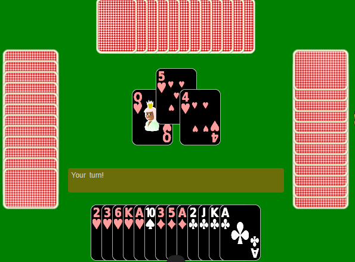

Hi there thank you for visiting my website, can you please confirm your age?
It is better that the viewers of this site and the players must be age of 15 or plus The game is very addictive. Hence, it can spoil the youngsters by drawing their attention towards it and away from their studies and other valuable activities!
The game Double-Siri is a very interesting game that is consistant of 4 players only. Why there are only 4? Because they sit in 2 pairs where two people sits accross each other as a team member.
This is just to give you an idea how the game seting looks like!
So let's begin learning this game. It is played with one deck, which is consistant of 52 cards. The deck is deivided into 4 which gives 13 cards per player. Before the distribution one player shuffles the deck. The distribution begins with 5 cards per player (once), then 4 cards per player until each player got their 13 cards in hand.
Win and Loss: there are 13 hands in total and whichever team gets 7 hands is the winner. Now that's not all to it, that's just the basics. Remember, we talked about distribution recently, there while distributing the cards, dealer let's the first 5 card's reciever to choose the suit as the breaker suit out of spades, hearts, diamonds, and clubs. Each suit consists highest to lowest Ace, King, Queen, Jack, and then 10 to 1.
The game play: if the suit picker team did not secure any hands then it's called grand Coat, otherwise it is just coat for the other team.